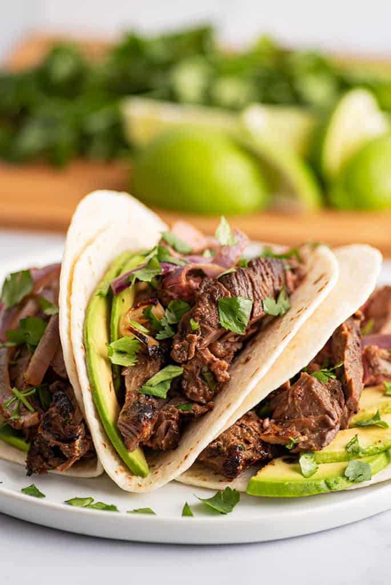

How To Make Carne Asada Tacos

Delicious Tacos with cilantro
Ingredients
Flank Steak
Salt Pepper
Lime
Cilantro
Diced Onions
Milagro Tortillas
Directions
- Dice up the Flank Steak and cook on iron skillet until for 7 minutes, add salt and pepper as needed.
- Warm up 2 tortillas on pan
- add cooked steak to warmed tortilla
- add onions and cilantro to taco
- add lime and salsa and enjoy